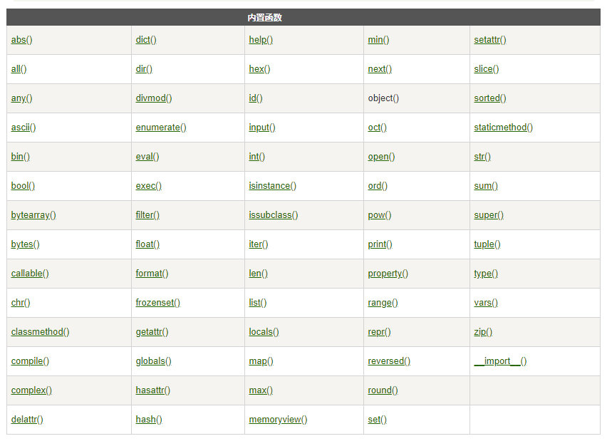

函数是组织好的，可重复使用的，用来实现单一，或相关联功能的代码段。
函数能提高应用的模块性，和代码的重复利用率。
语法:
def functionname( parameters ):
"函数_文档字符串"
function_suite
return [expression]说明:
示例见:
def my_max(x, y) :
# 定义一个变量z，该变量等于x、y中较大的值
z = x if x > y else y
# 返回变量z的值
return z
# 定义一个函数，声明一个形参
def say_hi(name) :
print("===正在执行say_hi()函数===")
return name + "，您好！"调用函数也就是执行函数。如果把创建的函数理解为一个具有某种用途的工具，那么调用函数就相当于使用该工具。
基本语法如下：
函数名([形参值])其中，函数名即指的是要调用的函数的名称；
形参值指的是当初创建函数时要求传入的各个形参的值。
需要注意的是，创建函数有多少个形参，那么调用时就需要传入多少个值，且顺序必须和创建函数时一致。
即便该函数没有参数，函数名后的小括号也不能省略。
说明:
示例见:
#调用前面创建的那 2 个函数，执行代码如下：a = 6
b = 9
# 调用my_max()函数，将函数返回值赋值给result变量
result = my_max(a , b) # ①
print("result:", result)
# 调用say_hi()函数，直接输出函数的返回值
print(say_hi("孙悟空")) # ②
#运行结果
#result: 9
#===正在执行say_hi()函数===
#孙悟空，您好上面程序中，分别在 ① 号、② 号代码处调用了 my_max() 和 say_hi() 这两个函数。从下面的运行结果可以看出，当程序调用一个函数时，既可以把调用函数的返回值赋值给指定变量，也可以将函数的返回值传给另一个函数，作为另一个函数的参数。
另外，在函数体中使用 return 语句可以显式地返回一个值，return 语句返回的值既可是有值的变量，也可是一个表达式。例如上面的 my_max() 函数，实际上也可简写为如下形式：
def my_max(x, y) :
# 返回一个表达式
return x if x > y else y是指一个函数里面又用def语句来创建了其它的函数
示例:
def fn_outer():
print("fn_outer被调用!")
def fn_inner():
print("fn_inner被调用")
fn_inner()
fn_inner()
print('fn_outter调用结束')
fn_outer()
可以使用 Python 内置的 help() 函数查看其他函数的帮助文档，我们也经常通过 help() 函数查看指定函数的帮助信息，这对于 Python 开发者来说非常重要。
我们还可以为函数编写说明文档，只要把一段字符串放在函数声明之后、函数体之前，这段字符串将被作为函数的部分，这个文档就是函数的说明文档。
程序既可通过 help() 函数查看函数的说明文档，也可通过函数的 __doc__ 属性访问函数的说明文档。下面程序示范了为函数编写说明文档：
def my_max(x, y) :
'''
获取两个数值之间较大数的函数。
my_max(x, y)
返回x、y两个参数之间较大的那个
'''
# 定义一个变量z，该变量等于x、y中较大的值
z = x if x > y else y
# 返回变量z的值
return z上面程序使用多行字符串的语法为 my_max() 函数编写了说明文档，接下来程序既可通过 help() 函数查看该函数的说明文档，也可通过 __doc__ 属性访问该函数的说明文档。
# 使用help()函数查看my_max的帮助文档
help(my_max)
#或者
print(my_max.__doc__)
#运行结果
Help on function my_max in module __main__:
my_max(x, y)
获取两个数值之间较大数的函数。
my_max(x, y)
返回x、y两个参数之间较大的那个Python解释器包含的一系列的内置函数，下面表格按字母顺序列出了内置函数：

接下来看看具体每个类别里包含了那些内置函数
|
abs(x) |
求绝对值 1、参数可以是整型，也可以是复数 |
| complex([real[, imag]]) | 创建一个复数 |
| divmod(a, b) | 分别取商和余数 注意：整型、浮点型都可以 |
| float([x]) | 将一个字符串或数转换为浮点数。如果无参数将返回0.0 |
| int([x[, base]]) | 将一个字符转换为int类型，base表示进制 |
| pow(x, y[, z]) | 返回x的y次幂 |
| range([start], stop[, step]) | 产生一个序列，默认从0开始 |
| round(x[, n]) | 四舍五入 |
| sum(iterable[, start]) | 对集合求和 |
| oct(x) | 将一个数字转化为8进制 |
| hex(x) | 将整数x转换为16进制字符串 |
| chr(i) | 返回整数i对应的ASCII字符 |
| bin(x) | 将整数x转换为二进制字符串 |
| bool([x]) | 将x转换为Boolean类型 |
|
basestring() |
str和unicode的超类 不能直接调用，可以用作isinstance判断 |
| format(value [, format_spec]) | 格式化输出字符串 格式化的参数顺序从0开始，如“I am {0},I like {1}” |
| unichr(i) | 返回给定int类型的unicode |
| enumerate(sequence [, start = 0]) | 返回一个可枚举的对象,该对象的next()方法将返回一个tuple |
| iter(o[, sentinel]) | 生成一个对象的迭代器，第二个参数表示分隔符 |
| max(iterable[, args...][key]) | 返回集合中的最大值 |
| min(iterable[, args...][key]) | 返回集合中的最小值 |
| dict([arg]) | 创建数据字典 |
| list([iterable]) | 将一个集合类转换为另外一个集合类 |
| set() | set对象实例化 |
| frozenset([iterable]) | 产生一个不可变的set |
| str([object]) | 转换为string类型 |
| 队集合排序 | |
| tuple([iterable]) | 生成一个tuple类型 |
| xrange([start], stop[, step]) |
xrange()函数与range()类似，但xrnage()并不创建列表，而是返回一个xrange对象，它的行为与列表相 似，但是只在需要时才计算列表值，当列表很大时，这个特性能为我们节省内存 |
| all(iterable) | 1、集合中的元素都为真的时候为真
2、特别的，若为空串返回为True |
| any(iterable) | 1、集合中的元素有一个为真的时候为真 2、特别的，若为空串返回为False |
| cmp(x, y) | 如果x < y ,返回负数；x == y, 返回0；x > y,返回正数 |
| callable(object) | 检查对象object是否可调用 1、类是可以被调用的 2、实例是不可以被调用的，除非类中声明了__call__方法 |
| classmethod() | 1、注解，用来说明这个方式是个类方法 2、类方法即可被类调用，也可以被实例调用 3、类方法类似于Java中的static方法 4、类方法中不需要有self参数 |
|
compile(source, filename, mode[, flags[, dont_inherit]]) |
将source编译为代码或者AST对象。代码对象能够通过exec语句来执行或者eval()进行求值。 1、参数source：字符串或者AST（Abstract Syntax Trees）对象。 2、参数 filename：代码文件名称，如果不是从文件读取代码则传递一些可辨认的值。 3、参数model：指定编译代码的种类。可以指定为 ‘exec’,’eval’,’single’。 4、参数flag和dont_inherit：这两个参数暂不介绍 |
| dir([object]) | 1、不带参数时，返回当前范围内的变量、方法和定义的类型列表； 2、带参数时，返回参数的属性、方法列表。 3、如果参数包含方法__dir__()，该方法将被调用。当参数为实例时。 4、如果参数不包含__dir__()，该方法将最大限度地收集参数信息 |
| delattr(object, name) | 删除object对象名为name的属性 |
| eval(expression [, globals [, locals]]) | 计算表达式expression的值 |
| execfile(filename [, globals [, locals]]) | 用法类似exec()，不同的是execfile的参数filename为文件名，而exec的参数为字符串。 |
| filter(function, iterable) | 构造一个序列，等价于[ item for item in iterable if function(item)] 1、参数function：返回值为True或False的函数，可以为None 2、参数iterable：序列或可迭代对象 |
| getattr(object, name [, defalut]) | 获取一个类的属性 |
| globals() | 返回一个描述当前全局符号表的字典 |
| hasattr(object, name) | 判断对象object是否包含名为name的特性 |
| hash(object) | 如果对象object为哈希表类型，返回对象object的哈希值 |
| id(object) | 返回对象的唯一标识 |
| isinstance(object, classinfo) | 判断object是否是class的实例 |
| issubclass(class, classinfo) | 判断是否是子类 |
| len(s) | 返回集合长度 |
| locals() | 返回当前的变量列表 |
| map(function, iterable, ...) | 遍历每个元素，执行function操作 |
| memoryview(obj) | 返回一个内存镜像类型的对象 |
| next(iterator[, default]) | 类似于iterator.next() |
| object() | 基类 |
| property([fget[, fset[, fdel[, doc]]]]) | 属性访问的包装类，设置后可以通过c.x=value等来访问setter和getter |
| reduce(function, iterable[, initializer]) | 合并操作，从第一个开始是前两个参数，然后是前两个的结果与第三个合并进行处理，以此类推 |
| reload(module) | 重新加载模块 |
| setattr(object, name, value) | 设置属性值 |
| repr(object) | 将一个对象变幻为可打印的格式 |
| slice（） | |
| staticmethod | 声明静态方法，是个注解 |
| super(type[, object-or-type]) | 引用父类 |
| type(object) | 返回该object的类型 |
| vars([object]) | 返回对象的变量，若无参数与dict()方法类似 |
| bytearray([source [, encoding [, errors]]]) | 返回一个byte数组 1、如果source为整数，则返回一个长度为source的初始化数组； 2、如果source为字符串，则按照指定的encoding将字符串转换为字节序列； 3、如果source为可迭代类型，则元素必须为[0 ,255]中的整数； 4、如果source为与buffer接口一致的对象，则此对象也可以被用于初始化bytearray. |
| zip([iterable, ...]) | 实在是没有看懂，只是看到了矩阵的变幻方面 |
| file(filename [, mode [, bufsize]]) |
file类型的构造函数，作用为打开一个文件，如果文件不存在且mode为写或追加时，文件将被创建。添加‘b’到mode参数中，将对文件以二进制形式操作。 添加‘+’到mode参数中，将允许对文件同时进行读写操作 |
| input([prompt]) |
获取用户输入 推荐使用raw_input，因为该函数将不会捕获用户的错误输入 |
| open(name[, mode[, buffering]]) | 打开文件 与file有什么不同？推荐使用open |
| 打印函数 | |
| raw_input([prompt]) | 设置输入，输入都是作为字符串处理 |
将这些内置函数进行了如下分类：
具体每个函数的解析如下：
>>> abs(-2)
2>>> divmod(5,2)
(2, 1)
>> divmod(5.5,2)
(2.0, 1.5)>>> max(1,2,3) # 传入3个参数 取3个中较大者
3
>>> max('1234') # 传入1个可迭代对象，取其最大元素值
'4'
>>> max(-1,0) # 数值默认取数值较大者
0
>>> max(-1,0,key = abs) # 传入了求绝对值函数，则参数都会进行求绝对值后再取较大者
-1>>> min(1,2,3) # 传入3个参数 取3个中较小者
1
>>> min('1234') # 传入1个可迭代对象，取其最小元素值
'1'
>>> min(-1,-2) # 数值默认去数值较小者
-2
>>> min(-1,-2,key = abs) # 传入了求绝对值函数，则参数都会进行求绝对值后再取较小者
-1>>> pow(2,3)
>>> 2**3
>>> pow(2,3,5)
>>> pow(2,3)%5>>> round(1.1314926,1)
1.1
>>> round(1.1314926,5)
1.13149# 传入可迭代对象
>>> sum((1,2,3,4))
10
# 元素类型必须是数值型
>>> sum((1.5,2.5,3.5,4.5))
12.0
>>> sum((1,2,3,4),-10)
0>>> bool() #未传入参数
False
>>> bool(0) #数值0、空序列等值为False
False
>>> bool(1)
True>>> int() #不传入参数时，得到结果0。
0
>>> int(3)
3
>>> int(3.6)
3>>> float() #不提供参数的时候，返回0.0
0.0
>>> float(3)
3.0
>>> float('3')
3.0>>> complex() #当两个参数都不提供时，返回复数 0j。
0j
>>> complex('1+2j') #传入字符串创建复数
(1+2j)
>>> complex(1,2) #传入数值创建复数
(1+2j)>>> str()
''
>>> str(None)
'None'
>>> str('abc')
'abc'
>>> str(123)
'123'>>> bytearray('中文','utf-8')
bytearray(b'\xe4\xb8\xad\xe6\x96\x87')>>> bytes('中文','utf-8')
b'\xe4\xb8\xad\xe6\x96\x87'>>> v = memoryview(b'abcefg')
>>> v[1]
98
>>> v[-1]
103>>> ord('a')
97>>> chr(97) #参数类型为整数
'a'>>> bin(3)
'0b11'>>> oct(10)
'0o12'>>> hex(15)
'0xf'>>> tuple() #不传入参数，创建空元组
()
>>> tuple('121') #传入可迭代对象。使用其元素创建新的元组
('1', '2', '1')>>>list() # 不传入参数，创建空列表
[]
>>> list('abcd') # 传入可迭代对象，使用其元素创建新的列表
['a', 'b', 'c', 'd']>>> dict() # 不传入任何参数时，返回空字典。
{}
>>> dict(a = 1,b = 2) # 可以传入键值对创建字典。
{'b': 2, 'a': 1}
>>> dict(zip(['a','b'],[1,2])) # 可以传入映射函数创建字典。
{'b': 2, 'a': 1}
>>> dict((('a',1),('b',2))) # 可以传入可迭代对象创建字典。
{'b': 2, 'a': 1}>>>set() # 不传入参数，创建空集合
set()
>>> a = set(range(10)) # 传入可迭代对象，创建集合
>>> a
{0, 1, 2, 3, 4, 5, 6, 7, 8, 9}>>> a = frozenset(range(10))
>>> a
frozenset({0, 1, 2, 3, 4, 5, 6, 7, 8, 9})>>> seasons = ['Spring', 'Summer', 'Fall', 'Winter']
>>> list(enumerate(seasons))
[(0, 'Spring'), (1, 'Summer'), (2, 'Fall'), (3, 'Winter')]
>>> list(enumerate(seasons, start=1)) #指定起始值
[(1, 'Spring'), (2, 'Summer'), (3, 'Fall'), (4, 'Winter')]语法:
作用:用来创建一个生成一系列整数的可迭代对象(也叫整数序列生成器)
说明:range返回的对象是可迭代对象.可以用于for语句中
>>> a = range(10)
>>> b = range(1,10)
>>> c = range(1,10,3)
>>> a,b,c # 分别输出a,b,c
(range(0, 10), range(1, 10), range(1, 10, 3))
>>> list(a),list(b),list(c) # 分别输出a,b,c的元素
([0, 1, 2, 3, 4, 5, 6, 7, 8, 9], [1, 2, 3, 4, 5, 6, 7, 8, 9], [1, 4, 7])
>>>>>> a = iter('abcd') #字符串序列
>>> a
<str_iterator object at 0x03FB4FB0>
>>> next(a)
'a'
>>> next(a)
'b'
>>> next(a)
'c'
>>> next(a)
'd'
>>> next(a)
Traceback (most recent call last):
File "<pyshell#29>", line 1, in <module>
next(a)
StopIteration>>> c1 = slice(5) # 定义c1
>>> c1
slice(None, 5, None)
>>> c2 = slice(2,5) # 定义c2
>>> c2
slice(2, 5, None)
>>> c3 = slice(1,10,3) # 定义c3
>>> c3
slice(1, 10, 3)#定义父类A
>>> class A(object):
def __init__(self):
print('A.__init__')
#定义子类B，继承A
>>> class B(A):
def __init__(self):
print('B.__init__')
super().__init__()
#super调用父类方法
>>> b = B()
B.__init__
A.__init__>>> a = object()
>>> a.name = 'kim' # 不能设置属性
Traceback (most recent call last):
File "<pyshell#9>", line 1, in <module>
a.name = 'kim'
AttributeError: 'object' object has no attribute 'name'>>> all([1,2]) #列表中每个元素逻辑值均为True，返回True
True
>>> all([0,1,2]) #列表中0的逻辑值为False，返回False
False
>>> all(()) #空元组
True
>>> all({}) #空字典
True>>> any([0,1,2]) #列表元素有一个为True，则返回True
True
>>> any([0,0]) #列表元素全部为False，则返回False
False
>>> any([]) #空列表
False
>>> any({}) #空字典
False>>> a = list(range(1,10)) #定义序列
>>> a
[1, 2, 3, 4, 5, 6, 7, 8, 9]
>>> def if_odd(x): #定义奇数判断函数
return x%2==1
>>> list(filter(if_odd,a)) #筛选序列中的奇数
[1, 3, 5, 7, 9]>>> a = map(ord,'abcd')
>>> a
<map object at 0x03994E50>
>>> list(a)
[97, 98, 99, 100]>>> a = iter('abcd')
>>> next(a)
'a'
>>> next(a)
'b'
>>> next(a)
'c'
>>> next(a)
'd'
>>> next(a)
Traceback (most recent call last):
File "<pyshell#18>", line 1, in <module>
next(a)
StopIteration
#传入default参数后，如果可迭代对象还有元素没有返回，则依次返回其元素值，如果所有元素已经返回，则返回default指定的默认值而不抛出StopIteration 异常
>>> next(a,'e')
'e'
>>> next(a,'e')
'e'>>> a = reversed(range(10)) # 传入range对象
>>> a # 类型变成迭代器
<range_iterator object at 0x035634E8>
>>> list(a)
[9, 8, 7, 6, 5, 4, 3, 2, 1, 0]>>> a = ['a','b','d','c','B','A']
>>> a
['a', 'b', 'd', 'c', 'B', 'A']
>>> sorted(a) # 默认按字符ascii码排序
['A', 'B', 'a', 'b', 'c', 'd']
>>> sorted(a,key = str.lower) # 转换成小写后再排序，'a'和'A'值一样，'b'和'B'值一样
['a', 'A', 'b', 'B', 'c', 'd']>>> x = [1,2,3] #长度3
>>> y = [4,5,6,7,8] #长度5
>>> list(zip(x,y)) # 取最小长度3
[(1, 4), (2, 5), (3, 6)]>>> help(str)
Help on class str in module builtins:
class str(object)
| str(object='') -> str
| str(bytes_or_buffer[, encoding[, errors]]) -> str
|
| Create a new string object from the given object. If encoding or
| errors is specified, then the object must expose a data buffer
| that will be decoded using the given encoding and error handler.
| Otherwise, returns the result of object.__str__() (if defined)
| or repr(object).
| encoding defaults to sys.getdefaultencoding().
| errors defaults to 'strict'.
|
| Methods defined here:
|
| __add__(self, value, /)
| Return self+value.>>> import math
>>> math
<module 'math' (built-in)>
>>> dir(math)
['__doc__', '__loader__', '__name__', '__package__', '__spec__', 'acos', 'acosh', 'asin', 'asinh', 'atan', 'atan2', 'atanh', 'ceil', 'copysign', 'cos', 'cosh', 'degrees', 'e', 'erf', 'erfc', 'exp', 'expm1', 'fabs', 'factorial', 'floor', 'fmod', 'frexp', 'fsum', 'gamma', 'gcd', 'hypot', 'inf', 'isclose', 'isfinite', 'isinf', 'isnan', 'ldexp', 'lgamma', 'log', 'log10', 'log1p', 'log2', 'modf', 'nan', 'pi', 'pow', 'radians', 'sin', 'sinh', 'sqrt', 'tan', 'tanh', 'trunc']>>> a = 'some text'
>>> id(a)
69228568
hash：获取对象的哈希值
>>> hash('good good study')
1032709256>>> type(1) # 返回对象的类型
<class 'int'>
#使用type函数创建类型D，含有属性InfoD
>>> D = type('D',(A,B),dict(InfoD='some thing defined in D'))
>>> d = D()
>>> d.InfoD
'some thing defined in D'>>> len('abcd') # 字符串
>>> len(bytes('abcd','utf-8')) # 字节数组
>>> len((1,2,3,4)) # 元组
>>> len([1,2,3,4]) # 列表
>>> len(range(1,5)) # range对象
>>> len({'a':1,'b':2,'c':3,'d':4}) # 字典
>>> len({'a','b','c','d'}) # 集合
>>> len(frozenset('abcd')) #不可变集合>>> ascii(1)
'1'
>>> ascii('&')
"'&'"
>>> ascii(9000000)
'9000000'
>>> ascii('中文') #非ascii字符
"'\\u4e2d\\u6587'"#字符串可以提供的参数 's' None
>>> format('some string','s')
'some string'
>>> format('some string')
'some string'
#整形数值可以提供的参数有 'b' 'c' 'd' 'o' 'x' 'X' 'n' None
>>> format(3,'b') #转换成二进制
'11'
>>> format(97,'c') #转换unicode成字符
'a'
>>> format(11,'d') #转换成10进制
'11'
>>> format(11,'o') #转换成8进制
'13'
>>> format(11,'x') #转换成16进制 小写字母表示
'b'
>>> format(11,'X') #转换成16进制 大写字母表示
'B'
>>> format(11,'n') #和d一样
'11'
>>> format(11) #默认和d一样
'11'
#浮点数可以提供的参数有 'e' 'E' 'f' 'F' 'g' 'G' 'n' '%' None
>>> format(314159267,'e') #科学计数法，默认保留6位小数
'3.141593e+08'
>>> format(314159267,'0.2e') #科学计数法，指定保留2位小数
'3.14e+08'
>>> format(314159267,'0.2E') #科学计数法，指定保留2位小数，采用大写E表示
'3.14E+08'
>>> format(314159267,'f') #小数点计数法，默认保留6位小数
'314159267.000000'
>>> format(3.14159267000,'f') #小数点计数法，默认保留6位小数
'3.141593'
>>> format(3.14159267000,'0.8f') #小数点计数法，指定保留8位小数
'3.14159267'
>>> format(3.14159267000,'0.10f') #小数点计数法，指定保留10位小数
'3.1415926700'
>>> format(3.14e+1000000,'F') #小数点计数法，无穷大转换成大小字母
'INF'
#g的格式化比较特殊，假设p为格式中指定的保留小数位数，先尝试采用科学计数法格式化，得到幂指数exp，如果-4<=exp<p，则采用小数计数法，并保留p-1-exp位小数，否则按小数计数法计数，并按p-1保留小数位数
>>> format(0.00003141566,'.1g') #p=1,exp=-5 ==》 -4<=exp<p不成立，按科学计数法计数，保留0位小数点
'3e-05'
>>> format(0.00003141566,'.2g') #p=1,exp=-5 ==》 -4<=exp<p不成立，按科学计数法计数，保留1位小数点
'3.1e-05'
>>> format(0.00003141566,'.3g') #p=1,exp=-5 ==》 -4<=exp<p不成立，按科学计数法计数，保留2位小数点
'3.14e-05'
>>> format(0.00003141566,'.3G') #p=1,exp=-5 ==》 -4<=exp<p不成立，按科学计数法计数，保留0位小数点，E使用大写
'3.14E-05'
>>> format(3.1415926777,'.1g') #p=1,exp=0 ==》 -4<=exp<p成立，按小数计数法计数，保留0位小数点
'3'
>>> format(3.1415926777,'.2g') #p=1,exp=0 ==》 -4<=exp<p成立，按小数计数法计数，保留1位小数点
'3.1'
>>> format(3.1415926777,'.3g') #p=1,exp=0 ==》 -4<=exp<p成立，按小数计数法计数，保留2位小数点
'3.14'
>>> format(0.00003141566,'.1n') #和g相同
'3e-05'
>>> format(0.00003141566,'.3n') #和g相同
'3.14e-05'
>>> format(0.00003141566) #和g相同
'3.141566e-05'#作用于类实例
>>> class A(object):
pass
>>> a.__dict__
{}
>>> vars(a)
{}
>>> a.name = 'Kim'
>>> a.__dict__
{'name': 'Kim'}
>>> vars(a)
{'name': 'Kim'}index = __import__('index')
index.sayHello()>>> isinstance(1,int)
True
>>> isinstance(1,str)
False
>>> isinstance(1,(int,str))
True>>> issubclass(bool,int)
True
>>> issubclass(bool,str)
False
>>> issubclass(bool,(str,int))
True#定义类A
>>> class Student:
def __init__(self,name):
self.name = name
>>> s = Student('Aim')
>>> hasattr(s,'name') #a含有name属性
True
>>> hasattr(s,'age') #a不含有age属性
False#定义类Student
>>> class Student:
def __init__(self,name):
self.name = name
>>> getattr(s,'name') #存在属性name
'Aim'
>>> getattr(s,'age',6) #不存在属性age，但提供了默认值，返回默认值
>>> getattr(s,'age') #不存在属性age，未提供默认值，调用报错
Traceback (most recent call last):
File "<pyshell#17>", line 1, in <module>
getattr(s,'age')
AttributeError: 'Stduent' object has no attribute 'age'>>> class Student:
def __init__(self,name):
self.name = name
>>> a = Student('Kim')
>>> a.name
'Kim'
>>> setattr(a,'name','Bob')
>>> a.name
'Bob'#定义类A
>>> class A:
def __init__(self,name):
self.name = name
def sayHello(self):
print('hello',self.name)
#测试属性和方法
>>> a.name
'小麦'
>>> a.sayHello()
hello 小麦
#删除属性
>>> delattr(a,'name')
>>> a.name
Traceback (most recent call last):
File "<pyshell#47>", line 1, in <module>
a.name
AttributeError: 'A' object has no attribute 'name'>>> class B: #定义类B
def __call__(self):
print('instances are callable now.')
>>> callable(B) #类B是可调用对象
True
>>> b = B() #调用类B
>>> callable(b) #实例b是可调用对象
True
>>> b() #调用实例b成功
instances are callable now.>>> globals()
{'__spec__': None, '__package__': None, '__builtins__': <module 'builtins' (built-in)>, '__name__': '__main__', '__doc__': None, '__loader__': <class '_frozen_importlib.BuiltinImporter'>}
>>> a = 1
>>> globals() #多了一个a
{'__spec__': None, '__package__': None, '__builtins__': <module 'builtins' (built-in)>, 'a': 1, '__name__': '__main__', '__doc__': None, '__loader__': <class '_frozen_importlib.BuiltinImporter'>}>>> def f():
print('before define a ')
print(locals()) #作用域内无变量
a = 1
print('after define a')
print(locals()) #作用域内有一个a变量，值为1
>>> f
<function f at 0x03D40588>
>>> f()
before define a
{}
after define a
{'a': 1}作用:将一系列的值以字符串形式输出到标准输出设备上，默认为终端
格式:print(value, ..., sep=' ', end='\n')
选项的关键字参数为:
sep 两个值之间的分隔符，默认为一个空格
end 输出完毕后在流末尾自动追加一个字符，默认为换行符'\n'
>>> print(1,2,3)
1 2 3
>>> print(1,2,3,sep = '+')
1+2+3
>>> print(1,2,3,sep = '+',end = '=?')
1+2+3=?作用:从标准输入设备上读取一个字符串(末尾的换行符会被删除)
格式:
input('提示字符串')
说明：
返回输入的字符串(仅python3)
'提示字符串' 可以为空
>>> s = input('please input your name:')
please input your name:Ain
>>> s
'Ain'# t为文本读写，b为二进制读写
>>> a = open('test.txt','rt')
>>> a.read()
'some text'
>>> a.close()compile：将字符串编译为代码或者AST对象，使之能够通过exec语句来执行或者eval进行求值
>>> #流程语句使用exec
>>> code1 = 'for i in range(0,10): print (i)'
>>> compile1 = compile(code1,'','exec')
>>> exec (compile1)
0
1
2
3
4
5
6
7
8
9
>>> #简单求值表达式用eval
>>> code2 = '1 + 2 + 3 + 4'
>>> compile2 = compile(code2,'','eval')
>>> eval(compile2)
10eval：执行动态表达式求值
>>> eval('1+2+3+4')
10exec：执行动态语句块
>>> exec('a=1+2') #执行语句
>>> a
3repr：返回一个对象的字符串表现形式(给解释器)
>>> a = 'some text'
>>> str(a)
'some text'
>>> repr(a)
"'some text'">>> class C:
def __init__(self):
self._name = ''
@property
def name(self):
"""i'm the 'name' property."""
return self._name
@name.setter
def name(self,value):
if value is None:
raise RuntimeError('name can not be None')
else:
self._name = value
>>> c = C()
>>> c.name # 访问属性
''
>>> c.name = None # 设置属性时进行验证
Traceback (most recent call last):
File "<pyshell#84>", line 1, in <module>
c.name = None
File "<pyshell#81>", line 11, in name
raise RuntimeError('name can not be None')
RuntimeError: name can not be None
>>> c.name = 'Kim' # 设置属性
>>> c.name # 访问属性
'Kim'
>>> del c.name # 删除属性，不提供deleter则不能删除
Traceback (most recent call last):
File "<pyshell#87>", line 1, in <module>
del c.name
AttributeError: can't delete attribute
>>> c.name
'Kim'>>> class C:
@classmethod
def f(cls,arg1):
print(cls)
print(arg1)
>>> C.f('类对象调用类方法')
<class '__main__.C'>
类对象调用类方法
>>> c = C()
>>> c.f('类实例对象调用类方法')
<class '__main__.C'>
类实例对象调用类方法# 使用装饰器定义静态方法
>>> class Student(object):
def __init__(self,name):
self.name = name
@staticmethod
def sayHello(lang):
print(lang)
if lang == 'en':
print('Welcome!')
else:
print('你好！')
>>> Student.sayHello('en') #类调用,'en'传给了lang参数
en
Welcome!
>>> b = Student('Kim')
>>> b.sayHello('zh') #类实例对象调用,'zh'传给了lang参数
zh
你好作用:创建一个匿名函数对象
同 def 类似，但不提供函数名
语法:
lambda [参数1, 参数2, ...]: 表达式
[] 里的内容可以省略示例:
def myadd(x, y):
return x + y
# 以上函数可以改写为:
myadd = lambda x, y: x + y
print('2 + 3 =', myadd(2, 3))语法说明:
函数为变量:函数名是变量,它在创建函数的时候绑定一个函数
示例:
def f1():
print("f1被调用")
fx = f1
fx() # 等同于 f1()函数为另一个函数的参数:
示例:
def f1():
print("hello")
def f2():
print('world')
def fx(fn):
print(fn)
fn() # 调用谁?
fx(f1) # 此语句在做什么？
fx(f2)函数为另一个函数的返回值:
即另一个函数可以返回一个函数
示例:
# 此示例示意函数为作函数的返回值
def get_fx():
s = input('请输入您要做的操作: ')
if s == '求最大':
return max
elif s == '求最小':
return min
elif s == '求和':
return sum
L = [2,4,6,8,10]
print(L)
f1 = get_fx()
print(f1(L))将内嵌函数的语句和这些语句的执行环境打包在一起,得到的对象称为闭包(Closure)
闭包的必须要满足的三个条件:
示例:
def outer(a): //外函数
b=10
def inner(): //内函数，
return a+b //内函数中用到了外函数的临时变量
return inner //返回内函数的应用
demo=outer(5) //demo 等于 内函数的引用
demo()
## 15
def outer(n): //外函数
def inner(a): //内函数，接受参数
return a**n //调用外函数的参数
return inner
x=outer(2)(3)
print(x)
## 9当我们调用 outer(5) 时，返回的并不是求和结果，而是内部 inner() 函数的引用，调用函数 demo() 时，才真正计算求和的结果：
在这个例子中，我们在函数 outer() 中又定义了函数 inner()，并且，内部函数 inner() 可以引用外部函数 outer() 的参数和局部变量，当 outer() 返回函数 inner时，相关参数和变量都保存在返回的函数中，这种称为 “ 闭包（Closure）”的程序结构拥有极大的威力。外部函数发现，自己的临时变量会在将来的内部函数中用到，自己在结束的时候，返回内部函数的同时，会把外函数的临时变量送给内函数绑定在一起。所以外函数已经结束了，调用内函数的时候仍然能够使用外函数的临时变量.
在内部函数中修改外部函数的变量：可以用 nonlocal 关键字声明这个变量， 表示这个变量不是局部变量空间的变量，需要向上一层变量空间找这个变量
def outer(a): //外函数
b=10
def inner(): //内函数，
nonlocal b //表示这个变量不是局部变量，需要向上一层变量空间找这个变量
b=20 //修改外变量的临时参数
return a+b //内函数中用到了外函数的临时变量
return inner //返回内函数的引用
demo=outer(5) //demo 等于 内函数的引用
demo()
### 25还有一点需要注意：使用闭包的过程中，一旦外函数被调用一次返回了内函数的引用，虽然每次调用内函数，是开启一个函数执行过后消亡，但是闭包变量实际上只有一份，每次开启内函数都在使用同一份闭包变量
def outer(a): //外函数
def inner(b): //内函数，
nonlocal a //表示这个变量不是局部变量，需要向上一层变量空间找这个变量
a=a+b //修改外变量的临时参数
return a //内函数中用到了外函数的临时变量
return inner //返回内函数的应用
demo=outer(2) //demo 等于 内函数的引用
print( demo(3) )
## 5
print( demo(4) )
## 9！！！返回闭包时牢记一点：返回函数不要引用任何循环变量，或者后续会发生变化的变量。
函数装饰器是指装饰的是一个函数,传入的是一个函数,返回的也是一个函数
假如我们要增强一个函数的功能，但又不希望修改函数的定义，这种在代码运行期间动态增强功能的方式，称之为装饰器(Decorator)。本质上，decorator 就是一个返回函数的高阶函数，而传入参数又是要执行的函数，它在闭包的基础上多进行了几步。
比如，我们现在要在函数调用前后记录时间，然后记录程序的运行时间。我们一般会想到的是在程序前后直接加入计时代码，但是这样往往需要修改函数的定义，所以一般不这样使用。
def myfunc():
startT=time.time() #开始时间
print("myfunc start.....")
time.sleep(1)
print("myfunc end....")
endT=time.time() #结束时间
msecs=(endT-startT)*1000
print("运行程序花费了 %f ms"%msecs)
myfunc()所以，装饰器就出现了。我们如果要定义一个能记录程序运行时间的装饰器decorator，可以如下定义：
from functools import wraps
def deco(func):
@wraps(func) #不加这个的话 myfunc.__name__ 的值就变成了 wrapper
def wrapper():
startT=time.time() #在执行函数的之前做的操作
print("执行函数之前")
func()
print("执行函数之后")
endT=time.time() #在执行函数的之后做的操作
msecs=(endT-startT)*1000
print("运行程序花费了 %f ms"%msecs)
return wrapper
@deco # 相当于 myfunc=deco(myfunc)
def myfunc():
print("myfunc start.....")
time.sleep(1)
print("myfunc end....")
myfunc() #实际上是在执行 wrapper()函数,也就是 deco(myfunc).wrapper()函数装饰器的语法:
def 装饰器函数名(参数):
语句块
return 函数对象被装饰函数的语法:
@装饰器函数名
def 函数名(形参列表):
语句块@staticmethod : 类静态方法
与成员方法的区别是没有self参数，并且可以在类不进行实例化的情况下调用
@classmethod : 类方法
与成员方法的区别在于所接收的第一个参数不是self(类实例的指针)，而是cls (当前类的具体类型)
@property : 属性方法
将一个类方法转变成一个类属性，只读属性
class A:
def talk():
print("talk")
A.talk() ###可以执行
a=A()
a.talk() ###不可以执
class A:
def talk(self):
print("talk")
A.talk() ###不可以执行
a=A()
a.talk() ###可以执
class A:
@staticmethod
def talk():
print("talk")
A.talk() ###可以执行
a=A()
a.talk() ###可以执行当函数的参数个数太多，需要简化时，可以使用 functools.partial 创建一个新的函数，这个新的函数可以固定住原函数的部分参数，从而在调用时更简单。这样的新函数叫做 偏函数
例如 int() 函数可以把字符串转换为整数，当仅传入字符串时，int() 函数默认按十进制转换
>>> int('12345')
12345但int()函数还提供额外的base参数，默认值为10。如果传入base参数，就可以做N进制的转换：
>>> int('12345', base=8)
5349
>>> int('12345', 16)
74565当我们要转换大量的二进制字符串时，每次都传入int(x, base=2)非常麻烦，于是我们可以使用 funtools.partial
>>> import functools
>>> int2 = functools.partial(int, base=2)
>>> int2('1000000')
64
>>> int2('1010101')
85满足下列一个条件的函数即为高阶函数:
map(func, *iterables) 用函数和对可迭代对象中的每一个元素作为参数计算出新的可迭代对象，当最短的一个可迭代对象不再提供数据时，此可迭代对象生成结束
示例:
def pow2(x):
return x**2
for x in map(pow2, range(1, 10)):
print(x)
内建的pow(x, y, z=None)
# 生成 1 ** 4 , 2**3 , 3 ** 2, 4 ** 1
for x in map(pow, range(1, 10), range(4,0,-1)):
print(x)
for x in map(pow, [2,3,5,7],
[4,3,2,1], range(5, 10)):
print(x) 格式:filter(func, iterable)
作用:筛选可迭代对象iterable中的数据，返回一个可迭代对象，此可迭代对象将对iterable进行筛选
说明:函数func将对每个元素进行求值，返回False则将此数据丢弃，返回True则保留此数据
示例:
def isodd(x): # 此函数判断x是否为奇数
return x % 2 == 1
for x in filter(isodd, range(10)):
print(x)
even = [x for x in
filter(lambda x: x%2==0, range(10))] 作用:将原可迭代对象的数据进行排序，生成排序后的列表
格式:sorted(iterable, key=None, reverse=False)
说明:
示例:
L = [5, -2, -4, 0, 3, 1]
L2 = sorted(L) # L2 = [-4, -2, 0, 1, 3, 5]
L2 = sorted(L, reverse=True)
L3 = sorted(L, key=abs) # L3 = [0, 1, -2, 3, -4, 5]
# 思考:
names = ['Tom', 'Jerry', 'Spike', 'Tyke']
sorted(names)
# 要想按名字的长度升序排序怎么办？
L4 = sorted(names, key=len)reduce()把一个函数作用在一个序列[x1, x2, x3, ...]上，这个函数必须接收两个参数，reduce把结果继续和序列的下一个元素做累积计算，返回一个整形,其效果就是： reduce(f, [x1, x2, x3, x4]) = f(f(f(x1, x2), x3), x4)
>>> from functools import reduce
>>> def fn(x, y):
... return x * 10 + y
...
>>> reduce(fn, [1, 3, 5, 7, 9])
13579实际参数(实参)的对应关系与形式参数(形参)的对应关系是按位置来依次对应的
语法:
def 函数名(形参名1, 形参名2, ...):
语句块示意:
def myfun(a, b, c):
pass
myfun(1, 2, 3) 说明:
实际参数和形式参数通过位置进行传递的匹配
实参个数必须与形参个数相同
1)序列传参:
序列传参是指在函数调用过程中，用 * 将序列拆解后按位置传参的方式进行参数传递
示例:
def myfun(a, b, c):
pass
s = [1, 2, 3]
myfun(*s) # * 表示把s拆开
s2 = "ABC"
myfun(*s2)2)星号元组形参:
语法:
def 函数名(*元组形参名):
语句 作用:收集多合的位置传参
说明:元组形参名通常用: 'args'
示例见:
def func(*args):
print("参数个数是:", len(args))
print('args =', args)
func(1,2,3,4)
func("hello", "world", 1, 2, 3) 关键字传参是指传参时，按着形参的名称给形参赋值
实参和形参按名称进行匹配
示例:
def myfun(a, b, c):
pass
myfun(b=22, c=33, a=11) # 等同于myfun(11,22,33)
myfun(c=3, b=2, a=1)说明:实参和形参可以不按位置匹配
1)字典关键字传参：
是指实参为字典，将字典用 ** 拆解后进行关键字传参
说明:
示例:
def myfun(a, b, c):
pass
d = {'c': 33, 'b': 22, 'a': 11}
myfun(**d) # 拆解字典后再传参2)命名关键字形参:
语法:
def 函数名(*, 命名关键字形参):
语句
或
def 函数名(*args, 命名关键字形参):
语句 作用：
所有的参数都必须用关键字传参或字典关键字传参传递
示例见:
def fn(*, d, e):
print("d=", d)
print("e=", e)
fn(d=100, e=200) # 合法调用
# fn(1, 2) # 不合法，不能用位置传参
# fn(1, 2, d=100, e=200)
def fm(*args, d, e):
print(args)
print('d=', d)
print('e=', e)
fm(1, 2, d=100, e=200)
fm(*"AB", **{'e': 20, 'd':10})3)双星号字典形参:
语法:
def 函数名(**字典形参名):
语句 作用：收集多合的关键字传参
说明:通常字典形参名定为: "kwargs"
示例见:
def func(**kwargs):
print("关键字参数个数是:", len(kwargs))
print("kwargs =", kwargs)
func(name='tarena', age=15)
func()说明:
1. 缺省参数必须自右至左依次存在,如果一个参数有缺省参数，则其右侧的所有参数都必须有缺省参数
def test(a, b=10, c): # <---是错的
pass2. 缺省参数可以有0个或多个,甚至全部都有缺省参数
语法:
def 函数名(形参名1=默认实参1, 形参名2=默认实参2, ...):
语句示例:
def info(name, age=1, address="未填写"):
print(name, "今年",
age, '岁, 家庭地址是:', address)
info('tarena', 15)
info('小魏', 20, '北京市朝阳区')
info('小李')函数传参方式，在能确定形参能唯一匹配到相应实参的情况下可以任意组合
示例:
def myfun(a, b, c):
pass
myfun(100, *[200, 300]) # 正确
myfun(*'AB', 300) # 正确
myfun(100, c=300, b=200) # 正确
myfun(1, **{'c': 3, 'b': 2}) # 正确
myfun(**{'c': 3, 'b': 2}, a=1) # 正确
myfun(b=2, c=3, 1) # 错误,不能确定1给谁?说明: